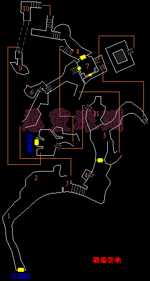
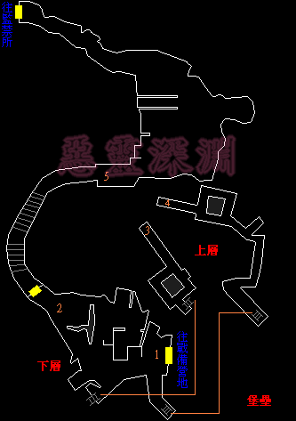
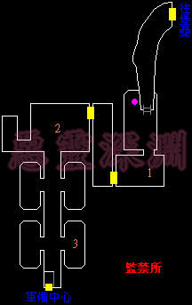
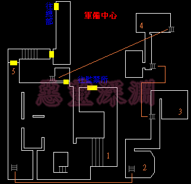
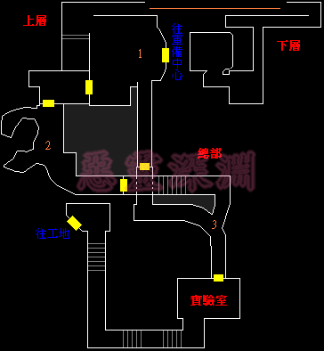

|
惡靈古堡～惡靈古堡４----地圖攻略～5-4
|
|
攻略內容以Normal為主，地圖上的紫色圓點●表示高價寶物的位置 ，標綠色的道具則是過關必須的重要道具。
 行經到編號1時，支援終於到了，Mike開著戰鬥直升機掩護Leon，到編號2，附近架著的機關槍就會開始攻擊，Leon可以先躲到帳篷 裡，Mike會幫Leon攻擊這些機台和敵人，但是他也會依據Leon的前進來攻擊，所以當Mike轟掉一個基地，Leon就必須繼續前進。 到編號3，有兩條路可以選，繼續往前，或是往下。 若是往下會遭遇一批士兵，可以到編號4的地方使用小刀戰法，到5的地方又有兩條路，此階段的目的是要到編號7，玩家可以參考 地圖自行選擇。 若是編號3處選擇繼續往前，在編號6會遇到敵人。 編號7打開往編號8的門，進入編號8的區域之後，在編號9出現鏈砲兵，玩家可以選擇從遠處狙擊，或是到編號10使用滑輪到編號9做 近身攻擊，打倒他可以得到15000ptas。從編號9往下一階，打開開關，即可開啟往堡壘的門。一進入堡壘後門就會關上，所以先去附 近回收道具吧。
（在這個地圖，雖然有Mike會幫忙攻擊，但是需要一點時間，如果玩家前進的速度快過Mike擊破的速度，玩家就必須自己打開一些 門，或是冒著備機關槍掃射的危險。是要快速通過，或是安全通過，就看玩家自己的選擇了。）
 一進入堡壘，後路被封，又有三座機關槍台瞄準，Leon最好先找掩護。當Leon一接近編號2時，門就會關上，必須要去編號3、4打開 開關，同樣Mike會協助Leon擊破機關槍台，玩家也可以選擇自己攻擊節省時間。 在編號5發生事件，Mike被擊落了，事件過後回收道具，往監禁所。
 這裡有高價寶物真珠のペンダント（珍珠的掛飾）。在編號1遇到Ada。編號2附近有打字機，也有一些道具，而其中有個鐵箱裡面 有包不明物體，還會掙扎，Leon可以將他殺死，不過那究竟是什麼呢？在編號3有一隻鐵處女，不想打就快速通過，趕緊離開。打倒 它可得5000ptas。
 到達編號1時要小心，除了有士兵之外，還會出現一個鏈砲兵，最好在編號1附近用油桶解決。 此處地圖的配置，在編號2、3的地方各有一個開關，而編號4有個需要卡片的總電源。當玩家調查這些地方，或是調查編號5的電子 門時，總電源的卡片會被某個士兵退出，導致電源中斷，而這個士兵同時會帶走這張電源裝置的卡片，並出現另一批士兵，帶走卡 片的士兵特色是有紅色的頭巾，將他打倒之後，回收卡片，將卡片重新置入編號4的總電源，然後打開編號2、3的開關，就可以通 過編號5的門。
 在總部發生事件，救出Ashley，兩人重新一起行動。在編號2附近除了武器商人之外，還有一些道具以及file Luis的Memo5。 在編號3的岔路小心兩邊都有敵人。這裡可以回到編號1的總部大廳，那裡很安全，有道具可拿，回去一趟吧。 進入實驗室，本章節結束。
疑難解答
是玩家在攻擊時擊中了Mike的直昇機，Mike會用對講機質問Leon到底在幹嗎，而Mike的直昇機有可能被擊 落嗎？除了在被擊落的劇情之外不可能。 未經許可禁止轉載連結 |
惡靈深淵Biohazard Abyss http://98.to/coolbio